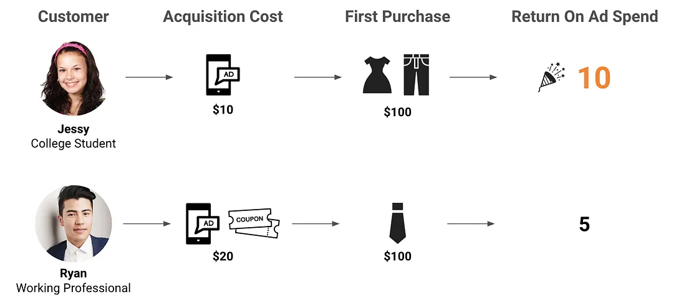
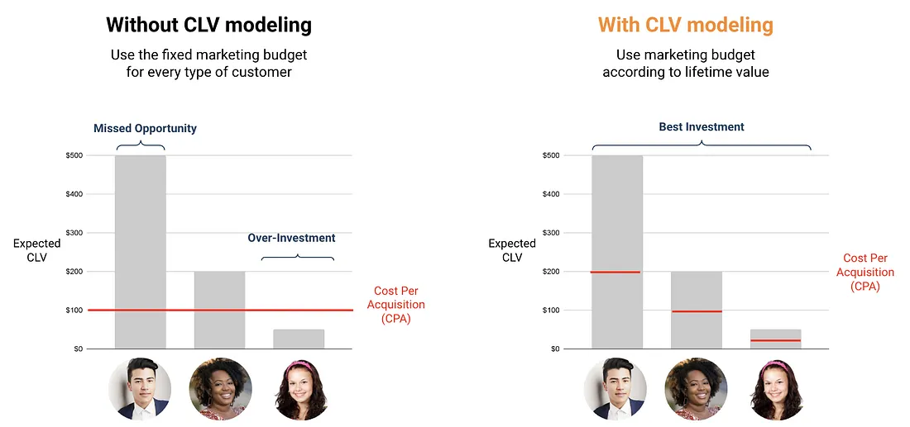
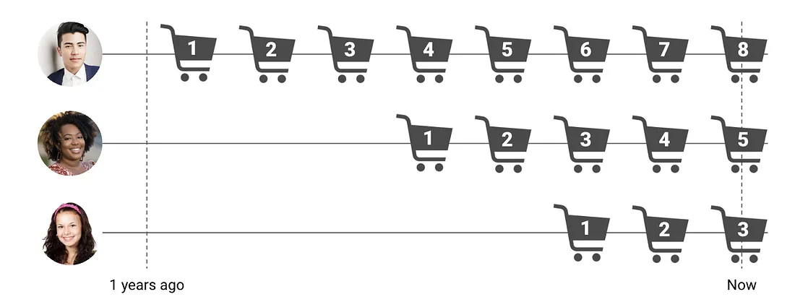
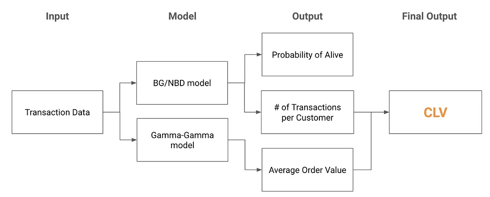
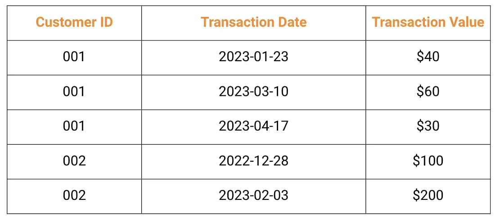

4.2 Modellierung des Customer Lifetime Value
Über die deutsche Ausgabe
Diese Seite ist eine KI-Übersetzung der englischen Ausgabe von Marketing Science in Python. Die englische Ausgabe ist maßgeblich und hat bei Abweichungen Vorrang. Code, Notebooks und Text in Abbildungen bleiben auf Englisch. Englische Ausgabe lesen
Die meisten Marketingteams konzentrieren sich auf die Cost Per Acquisition (CPA), oft gleichbedeutend mit CAC (Customer Acquisition Cost) verwendet: Ein niedrigerer CPA bedeutet eine bessere Kampagne. Der Customer Lifetime Value (CLV), in Analytics- und SaaS-Kontexten oft LTV genannt, stellt die Frage neu. Statt zu fragen, wie günstig Sie einen Kunden gewinnen können, fragt er, wie viel jeder Kunde im Zeitverlauf wert ist, und nutzt diese Antwort, um die CPA-Obergrenze festzulegen.
Dieses Kapitel zeigt, wie Sie den CLV auf Ebene des einzelnen Kunden mit probabilistischen BTYD-Modellen (BG/NBD + Gamma-Gamma mit PyMC-Marketing) vorhersagen und wie Sie diese Vorhersagen in Budgetentscheidungen überführen.
Warum der CLV die Entscheidung verändert
Nehmen Sie eine Modemarke im E-Commerce, die Kunden über Anzeigen und Coupons gewinnt. Angenommen, zwei Segmente dominieren den Funnel: Studierende und Berufstätige. Der erste Kauf sieht so aus:
- Studierende: $10 Akquisitionskosten, $100 Kauf → 10× ROAS.
- Berufstätige: $20 Akquisitionskosten, $100 Kauf → 5× ROAS.

Nach dem ROAS des ersten Tages scheint die Wahl klar: mehr Budget in Studierende. Aber das langfristige Bild kehrt sie um. Studierende wandern nach der ersten Transaktion ab, sodass ihre Ausgaben über die gesamte Kundenbeziehung nahe $100 bleiben. Berufstätige kommen wieder und geben im Zeitverlauf mehr aus, mit durchschnittlichen Ausgaben von $400 über die gesamte Kundenbeziehung. Plötzlich ist das „teure“ Segment in Wirklichkeit das Schnäppchen.

Das ist die Lücke, die die CLV-Modellierung schließt. Ohne sie bekommt jeder Kunde dieselbe CPA-Obergrenze, was bedeutet, für Kunden mit geringem Wert zu viel und für Kunden mit hohem Wert zu wenig zu zahlen. Mit ihr skaliert die Obergrenze mit dem vorhergesagten Wert, sodass dasselbe Budget mehr von den richtigen Kunden gewinnt.

Der CLV ist in jeder Phase nützlich: in der Akquisition, um mehr für hochwertige Segmente auszugeben, in der Wachstumsphase, um Service und exklusive Angebote für hochwertige Kunden zu priorisieren, und in der Retention, um Rückgewinnungskampagnen dort zu konzentrieren, wo die Rechnung tatsächlich aufgeht.
Die drei Ziele eines CLV-Modells folgen daraus direkt: (1) den künftigen Wert auf Ebene des einzelnen Kunden vorhersagen, (2) erkennen, was Kunden mit hohem CLV unterscheidet, und (3) beides in die Entscheidungen über das Marketingbudget einfließen lassen.
Warum die traditionelle Formel zu kurz greift
Die Lehrbuchformel für den CLV hat drei Komponenten:
\[ \text{CLV} = \text{Average Order Value} \times \text{Purchase Frequency} \times \text{Customer Lifespan} \]
Für eine Modemarke, deren Kunden $100 pro Bestellung ausgeben, 4-mal im Jahr einkaufen und 3 Jahre treu bleiben: \(\text{CLV} = 100 \times 4 \times 3 = \$1{,}200\). Einfach, intuitiv und nützlich für grobe Größenschätzungen des Geschäfts, aber zu grob für Entscheidungen auf Kundenebene. Sie scheitert an drei Punkten.

Grenze 1: Nicht alle Kunden sind gleich. Ein Durchschnitt über den gesamten Kundenstamm verzerrt beide Enden der Verteilung:
| Kundengruppe | Anzahl Kunden | Durchschnittlicher CLV | Gesamtumsatz |
|---|---|---|---|
| Normale Kunden | 90 | $100 | $9,000 |
| Großeinkäufer | 10 | $10,000 | $100,000 |
| Gesamt | 100 | $1,090 | $109,000 |
Der Durchschnitt von $1,090 existiert in den Daten und beschreibt niemanden. Sie brauchen den CLV auf Ebene des einzelnen Kunden.
Grenze 2: Unterschiedliche Zeitpunkte des Erstkaufs. Ein Kunde, der vor einem Jahr angefangen hat, liefert ein volles Jahr beobachtbarer Daten; einer, der vor drei Monaten angefangen hat, viel weniger. Rohe Kaufhäufigkeiten vermengen „geringes Engagement“ mit „Neuankömmling“, sofern Sie nicht um die Tenure bereinigen.

Grenze 3: Tot oder lebendig? Bei Abonnements ist der Churn beobachtbar: Der Kunde kündigt. Im Einzelhandel und E-Commerce ist er das nicht. Ob ein Kunde als „lebendig“ zählt, hängt von seinem eigenen Muster ab. Wenn jemand, der monatlich kauft, drei Monate lang verstummt, ist das ein Warnsignal; wenn jemand, der alle sechs Monate kauft, drei Monate aussetzt, ist das normal.

Alle drei Probleme haben dieselbe Wurzel: Ein einzelner Durchschnitt kann einen heterogenen Kundenstamm nicht abbilden. Die Lösung besteht darin, den CLV auf Ebene des einzelnen Kunden zu modellieren, und genau das tut BTYD.
BTYD: Das BG/NBD- + Gamma-Gamma-Framework
Buy-Till-You-Die-Modellierung (BTYD) besteht aus zwei zusammengefügten probabilistischen Modellen:
- BG/NBD sagt die Wahrscheinlichkeit vorher, dass ein Kunde noch aktiv ist, sowie seine künftige Zahl an Transaktionen.
- Gamma-Gamma schätzt seinen durchschnittlichen Bestellwert.
Multiplizieren Sie beides, diskontieren Sie über die Zeit, und Sie erhalten den CLV auf Ebene des einzelnen Kunden mit einem Kredibilitätsintervall um jede Schätzung.

BG/NBD-Modell
Das BG/NBD-Modell nimmt zwei latente Prozesse im Lebenszyklus eines Kunden an:
- Kaufprozess. Solange der Kunde aktiv ist, folgen die Käufe einem Poisson-Prozess mit Rate \(\lambda\).
- Abwanderungsprozess. Nach jedem Kauf besteht eine Wahrscheinlichkeit \(p\), dass der Kunde dauerhaft inaktiv wird.

Sowohl \(\lambda\) als auch \(p\) variieren zwischen Kunden. Eine bayesianische hierarchische Struktur fängt das auf: Die \(\lambda\)-Werte folgen über den Kundenstamm hinweg einer Gamma-Verteilung, die \(p\)-Werte einer Beta-Verteilung. Das Modell lernt Muster auf Populationsebene und liefert dennoch individuelle Schätzungen.
Eine nützliche Konsequenz: Die Wahrscheinlichkeit, dass ein Kunde aktiv ist, entwickelt sich über die Zeit. Sie sinkt, je größer die Lücke seit dem letzten Kauf wird, und springt in dem Moment wieder nach oben, in dem ein neuer Kauf eingeht.

Eine vollständige Herleitung einschließlich des grafischen Modells und der Likelihood-Funktion finden Sie bei Fader u. a. (2005).
Gamma-Gamma-Modell
Das Gamma-Gamma-Modell schätzt den durchschnittlichen Bestellwert. Es verwendet eine zweistufige bayesianische Hierarchie: eine Gamma-Verteilung je Kunde (sein eigenes Ausgabenmuster) und eine weitere Gamma-Verteilung über den Kundenstamm (die Variation zwischen Kunden).
Eine vollständige Herleitung finden Sie bei Fader und Hardie (2013).
BTYD setzt ein nicht-vertragliches Umfeld voraus: Churn wird nie beobachtet, also leitet das Modell ihn aus den Kauflücken ab. In vertraglichen Umfeldern wie SaaS und Abonnements ist Churn ein explizites Kündigungsereignis, und das Shifted-Beta-Geometric-Modell (sBG) nutzt dieses Signal direkt; PyMC-Marketing liefert es als ShiftedBetaGeoModel (siehe das sBG-Notebook). Um Churn-Treiber mit zeitabhängigen Kovariaten zu erklären, verwenden Sie die Überlebenszeitanalyse (Cox-Proportional-Hazards-Modell). Und schließlich: Wenn Sie über reichhaltige Verhaltensmerkmale und eine produktive ML-Pipeline verfügen, kann eine ML-Regression (z. B. LightGBM) auf ein Ziel mit festem Horizont BTYD in der Genauigkeit schlagen; wägen Sie das vor einem Wechsel gegen das benötigte Datenvolumen, den Aufwand für Retraining und Deployment, die Pflege der Feature-Pipeline, die Erklärbarkeit und die Ausgabe von Unsicherheit ab. Ein praktischer Hybrid besteht darin, BTYD-Ausgaben (P(alive), erwartete Käufe) als Features in das ML-Modell einzuspeisen; die Begleitskripte unter lightgbm-companion/ zeigen eine durchgängige LightGBM-Implementierung.
Implementierung mit PyMC-Marketing
PyMC-Marketing baut auf PyMC auf und ersetzt die Bibliothek lifetimes (inzwischen im Wartungsmodus). Das Hauptmerkmal ist die eingebaute Quantifizierung der Unsicherheit: Jede CLV-Schätzung kommt mit HDI-Grenzen, sodass Sie sehen, wie sicher sich das Modell bei jedem Kunden ist.
Das CLV-Modell braucht nur Verkaufstransaktionen: Kunden-ID, Transaktionsdatum, Transaktionswert. Zwei bis drei Jahre Historie reichen in der Regel aus.

Daten und RFM-T-Zusammenfassung
Wir verwenden den Lebensmitteleinzelhandels-Datensatz Dunnhumby “The Complete Journey”, denselben Datensatz wie im Notebook zur traditionellen Segmentierung (sec4.1_traditional_segmentation.ipynb). So können Sie dieselben rund 2,500 Haushalte aus der Pipeline der traditionellen Segmentierung in den CLV übernehmen; nach der üblichen Bereinigung (Entfernen von Transaktionen mit negativem Wert und Zeilen mit Nullmenge) und der RFM-T-Konstruktion fittet das Begleit-Notebook BG/NBD auf allen 2,500 Haushalten, und das Gamma-Gamma-Ausgabenmodell verwendet die 2,497 davon mit mindestens einem Wiederholungskauf.
| Metrik | Definition |
|---|---|
| Recency | Zeitspanne zwischen dem ersten und dem jüngsten Kauf eines Kunden |
| Frequency | Anzahl der Wiederholungskäufe (Gesamtzahl der Käufe minus eins) |
| Monetary | Durchschnittlicher Wert der Wiederholungskäufe eines Kunden (der erste Kauf ist ausgeschlossen) |
| Tenure | Zeitspanne zwischen dem ersten Kauf eines Kunden und dem Ende des Untersuchungszeitraums |
In Abschnitt 4.1 bedeutete Recency die Tage seit dem letzten Kauf. In der BTYD-Konvention, der rfm_summary von PyMC-Marketing folgt, ist es die Spanne vom ersten bis zum jüngsten Kauf eines Kunden, sodass höher bedeutet: bis vor Kurzem noch aktiv.
import pandas as pd
from datetime import datetime, timedelta
from pymc_marketing import clv
# Load Dunnhumby transactions and convert DAY counter to datetime
# (see companion notebook for the full pipeline)
BASE_DATE = datetime(2012, 1, 1)
data["date"] = data["DAY"].apply(lambda d: BASE_DATE + timedelta(days=int(d) - 1))
data_summary = clv.utils.rfm_summary(
data, "CustomerID", "date", "TotalSales", time_unit="D"
)
data_summary.index = data_summary["customer_id"]Begleit-Notebook: sec4.2_clv_pymc_marketing.ipynb fittet die Modelle BG/NBD und Gamma-Gamma, schätzt den CLV und analysiert demografische Segmente auf dem Dunnhumby-Datensatz.
Auf GitHub ansehen
Fitten und Schätzen des CLV
# --- BG/NBD: purchase frequency + P(alive) ---
bgm = clv.BetaGeoModel()
bgm.fit(data=data_summary)
# --- Gamma-Gamma: average order value ---
nonzero = data_summary.query("frequency > 0 and monetary_value > 0")
gg_data = nonzero[["customer_id", "frequency", "monetary_value"]]
gg = clv.GammaGammaModel()
gg.fit(data=gg_data)
# --- Combined CLV estimate (DCF with 1% monthly discount) ---
clv_estimate = gg.expected_customer_lifetime_value(
transaction_model=bgm,
data=data_summary[[
"customer_id", "frequency", "recency", "T", "monetary_value"
]],
future_t=120, # 120 months = 10 years
discount_rate=0.01,
time_unit="D",
)Die Ausgabe enthält nicht nur Punktschätzungen, sondern auch HDI-Grenzen (Highest Density Interval). In dieser API wird future_t in Monaten gemessen, während time_unit="D" dem Modell mitteilt, dass die RFM-T-Eingaben in Tagen gemessen sind. Das Modell sagt Ihnen, wie sicher es sich bei jedem Kunden ist, allerdings nur in Bezug auf den Zeitpunkt der Käufe: Die Posterior-Verteilung der Ausgaben wird vor der Diskontierung auf ihren Mittelwert zusammengefasst, behandeln Sie die Grenzen also als Untergrenze der tatsächlichen Unsicherheit.
Der Horizont ist eine Entscheidung, kein Standardwert. Dieser Datensatz deckt etwa 23 Monate ab, eine Projektion über 120 Monate reicht also rund fünfmal über das beobachtete Fenster hinaus. Die Schätzung läuft nicht davon, weil BG/NBD die Kundenabwanderung in die Projektion einbaut, aber diese Abwanderungsrate ist selbst aus diesen 23 Monaten geschätzt. Das Begleit-Notebook diskontiert dieselbe Posterior-Verteilung erneut auf 3, 5 und 10 Jahre. Auf diesem Datensatz bewegt sich die Rangfolge der Kunden über die drei Horizonte kaum, sodass rangbasiertes Targeting gegenüber diesen getesteten Horizonten unempfindlich ist; die mediane 10-Jahres-Schätzung liegt etwa beim 2.23-Fachen der 3-Jahres-Schätzung, sodass alles, was den CLV in eine Dollar-Obergrenze verwandelt, den verwendeten Horizont angeben muss.
Probability-Alive-Matrix
Ein schneller Weg, zu sehen, was das BG/NBD-Modell gelernt hat, ist die Probability-Alive-Matrix. Recency auf der einen Achse, Frequency auf der anderen, die Farbe zeigt P(alive). Denken Sie daran, dass Recency hier die BTYD-Definition aus der Tabelle oben ist, die Spanne vom ersten bis zum letzten Kauf, sodass hohe Recency bedeutet, dass der Kunde bis vor Kurzem noch gekauft hat, das Gegenteil davon, wie das Marketing-RFM das Wort verwendet. Vier Ecken erzählen vier Geschichten: treue Wiederholungskäufer (hohe Frequency, hohe Recency, häufig und weiterhin aktiv), gefährdete Stammkunden (hohe Frequency, niedrige Recency, sie kauften früher viel und wurden dann still), einmalige Passanten (niedrige Frequency, niedrige Recency, ein oder zwei Käufe direkt nach der Akquisition und dann Stille) und Kunden mit dünner Historie (niedrige Frequency, hohe Recency, zu wenige Käufe, um sicher zu sein, aber der jüngste ist frisch, sodass das Modell ihnen im Zweifel Recht gibt; die Abbildung beschriftet diese Ecke als neue Kunden).

Umsatz-CLV → Gewinn-CLV
Das Gamma-Gamma-Modell schätzt den Umsatz pro Transaktion. Damit der CLV für Budgetentscheidungen nützlich wird, rechnen Sie den Umsatz in Gewinn um:
\[ \text{CLV}_{\text{profit}} = \text{CLV}_{\text{revenue}} \times \text{Gross Margin} \]
Wenn die Margen zwischen Produktkategorien stark variieren, berechnen Sie kundenspezifische Margen aus der Kaufhistorie, statt einen pauschalen Satz zu verwenden.
Segmente und CLV kombinieren
Verknüpfen Sie die segment_id aus dem Segmentierungskapitel (Kapitel 4.1) mit der CLV-Schätzung jedes Kunden. Das ergibt die Arbeitstabelle, auf die dieser Teil hingearbeitet hat: welche Art von Kunde das ist, was er wert ist und was das Unternehmen für ihn tun sollte.
Demografie kann weiterhin helfen, ein Segment zu beschreiben oder zu erreichen, aber die Hauptentscheidungsebene ist Verhaltenssegment × vorhergesagter Wert. Das Begleit-Notebook verknüpft die CLV-Schätzungen mit der Dunnhumby-Datei hh_demographic.csv, sodass Sie jedes Segment entlang demografischer Dimensionen wie Einkommen profilieren können: nützlich für die Wahl von Creative und Kanal, weniger für die Festlegung des Budgets.
Ein Produktionsmuster, von dem PyMC Labs berichtet: Testen Sie segmentspezifische Gamma-Gamma-Modelle, wenn sich die Ausgabenverteilungen zwischen Segmenten wesentlich unterscheiden, und lassen Sie das Transaktionsmodell auf der gesamten Population gepoolt. Bauen Sie die Segmente nur auf der Kalibrierungsperiode und vergleichen Sie sie out of sample mit dem gepoolten Modell; andernfalls teilen Segmente, die aus dem Monetary-Wert abgeleitet sind, Information mit dem Ausgabenmodell, das sie speisen.
Den CLV in die Praxis bringen
Sobald Sie ein clv_estimate pro Kunde haben, ergeben sich drei Anwendungen fast von selbst. Diese Muster funktionieren mit jedem CLV-Score: Nachgelagerte Systeme brauchen nur eine Kunden-ID und eine Zahl.
- CPA-Obergrenzen für das Anzeigen-Bidding
Setzen Sie den maximalen CPA als Bruchteil des vorhergesagten Gewinn-CLV:
\[ \text{Allowable CPA} = \text{CLV}_{\text{profit}} \times \text{Target acquisition ratio} \]
Wenn ein Segment einen vorhergesagten Gewinn-CLV von $200 hat und Ihre Ziel-Akquisitionsquote 33% beträgt, liegt der maximale CPA bei $66. Für das Bidding unter Unsicherheit verwenden Sie eine konservative Untergrenze des vorhergesagten Gewinn-CLV statt des Mittelwerts. Viele Werbeplattformen können Wertsignale für wertbasiertes Bidding oder Zielgruppenregeln aufnehmen, aber die genaue Umsetzung hängt von der Plattform ab.
- Churn-Alarme für das CRM
Markieren Sie Kunden, deren P(alive) in 30 Tagen um mehr als 30 Punkte fällt. Das Signal ist die Änderungsrate, nicht das absolute Niveau. Ein Kunde, dessen P(alive) innerhalb eines Monats von 0.85 auf 0.40 gefallen ist, ist weit dringender als einer, der seit sechs Monaten stabil bei 0.35 liegt. Der erste löst sich ab; der zweite ist einfach ein Käufer mit niedriger Frequenz.
- Kohortenprognosen für die Finanzabteilung
Die Finanzabteilung plant in Budgetzyklen, nicht in Kundenlebensdauern; aggregieren Sie die individuellen CLV-Schätzungen daher nach Akquisitionskohorte und projizieren Sie den Umsatz auf 12, 24 und 36 Monate. Fügen Sie HDI-Grenzen hinzu, damit die Finanzabteilung weiß, dass es sich um probabilistische Schätzungen handelt, nicht um feste Ziele. So beantworten Sie die Frage „Was ist der erwartete Ertrag unserer Akquisitionsausgaben im dritten Quartal?“, ohne dass der CFO BG/NBD lernen muss.
Vergleichen Sie den vorhergesagten mit dem tatsächlichen Umsatz je Kohorte nach 3, 6 und 12 Monaten. Wenn das Verhältnis um mehr als ±20% driftet, trainieren Sie neu. Prüfen Sie die CLV-Vorhersagen außerdem auf Verzerrung gegenüber geschützten Gruppen: Modelle, die auf unterversorgten Segmenten trainiert wurden, schreiben diese Verzerrung fort, indem sie einen niedrigeren CLV vorhersagen und niedrigere Akquisitionsgebote setzen.
Das Wichtigste in Kürze
- Der CLV ersetzt ein einheitliches CPA-Ziel durch Ausgaben, die proportional zu dem sind, was jeder Kunde wert ist. Der Durchschnitt existiert in den Daten und beschreibt niemanden.
- In nicht-vertraglichen Umfeldern modelliert BG/NBD die künftigen Käufe und Gamma-Gamma die Ausgaben, allein aus Transaktionsdaten. Jeder Kunde bekommt ein Kredibilitätsintervall, bieten Sie also gegen eine konservative Untergrenze statt gegen den Mittelwert.
- Rechnen Sie den Umsatz-CLV in den Gewinn-CLV um, bevor er eine CPA-Obergrenze setzt, und nennen Sie den Horizont: Die mediane Zehnjahresschätzung liegt etwa beim 2.23-Fachen der Dreijahresschätzung, auch wenn sich die Rangfolge kaum bewegt.